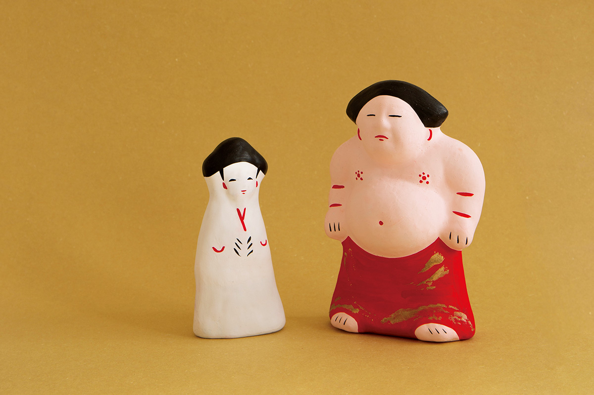
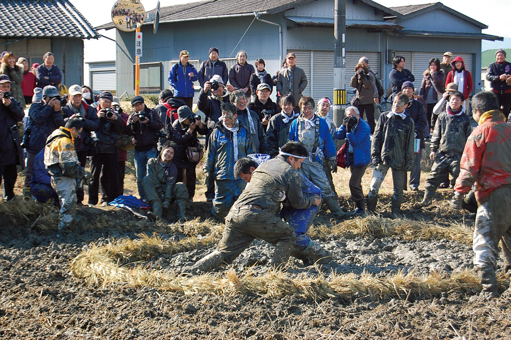

Префектура Нара · Сакураи и Кацураги · история
Родина сумо: где в Наре прошёл первый поединок и как он живёт в праздниках

Сумо называют национальным видом спорта Японии, но мало кто знает, что его история начинается в Наре. Первый поединок, о котором пишут древние хроники, прошёл у подножия гор на востоке нынешнего города Сакураи.
Легенда
Бой, сломавший рёбра
Префектуру Нара считают землёй, где родилось японское государство: здесь, по преданию, поставил свой дворец первый император Дзимму. И именно здесь, если верить хронике «Нихон сёки», составленной в 720 году, впервые сошлись два борца.
Хроника относит это событие ко временам императора Суйнина, одиннадцатого правителя Японии в традиционном списке. Его правление полулегендарно: по «Нихон сёки», на второй год он поставил столицу в местах, где сегодня стоит город Сакураи. А на седьмой год, в седьмой день седьмого месяца, Номи-но Сукунэ сошёлся в схватке с Тайма-но Кэхая. Сукунэ ударом ноги переломал сопернику рёбра и раздробил ему поясницу.
Номи-но Сукунэ вошёл в историю не только силой, но и умом. Во второй раз хроника вспоминает его как человека, который придумал ханива, глиняные фигуры для курганов кофун, и много сил отдал строительству этих гробниц.
Спор
Из какого Идзумо пришёл Сукунэ
По хронике, Сукунэ пришёл «из Идзумо». Обычно это читают как провинцию Идзумо, нынешнюю префектуру Симанэ на берегу Японского моря. Но у гида общества «Нара Махороба Сомелье», который переехал в Нару пятнадцать лет назад, на родину жены, своя версия.
«Я думаю, речь не о провинции Идзумо, а об усадьбе Идзумо в самой земле Ямато. В районе Идзумо города Сакураи, бывшей деревне Идзумо, до сих пор говорят: Номи-но Сукунэ был из нашей деревни. Но есть и версия о провинции Идзумо, и оба места дружат до сих пор»
гид «Нара Махороба Сомелье»
В этом районе Сакураи делают «Идзумо-нингё», глиняные куклы, которые охотно покупают паломники соседнего храма Хасэдэра. Их ремесло, как считается, восходит к тем самым ханива, которые придумал Сукунэ. Среди кукол есть борцы в его честь и фигурки в кимоно, запахнутом налево, как одевают умерших: они передают настроение ханива, стороживших курганы.
Сам бой, по преданию, прошёл на земле святилища Анаси-ни-имасу Хёдзу, недалеко от района Идзумо. Это место считают родиной сумо, и тому есть подсказка: здесь сохранилось старое название участка «Катаякэси». «Катая» называли место, где ждут своего выхода борцы, и выход борца на помост до сих пор зовётся «катая-ири».
Святилище Анаси-ни-имасу Хёдзу
- Адрес
- префектура Нара, Сакураи, Анаси, 1065
История
От придворного обряда к большому сумо
«Вообще-то нельзя точно сказать, что сумо зародилось именно в Японии. Состязания вроде борьбы есть во всём мире, и с древности люди сходились в них ради боя или забавы»
гид «Нара Махороба Сомелье»
Зато не вызывает сомнений, что в Японии сумо пошло своим путём. В 734 году, в тот же день календаря, что и бой Сукунэ, устроили поединки, на которые смотрел император Сёму (701–756), правитель, при котором в Наре построили храм Тодайдзи с Великим Буддой. С этого начался «сумаи-но сэтиэ», придворный праздник сумо, который должен был успокаивать мстительных духов, и он стал ежегодным обрядом двора. В поэтической антологии «Манъёсю» упоминается, что на седьмой день седьмого месяца, в праздник Танабата, при дворе проходили поединки, а особые чиновники собирали борцов со всех провинций. Так в сумо соединились религия и зрелище.
С эпохи Камакура до эпохи сражающихся провинций, то есть примерно с конца XII до конца XVI века, сумо служило самураям военной тренировкой. В эпоху Эдо появились люди, для которых борьба стала профессией, и к середине периода турниры начали проводить регулярно. Сильные борцы быстро сделали сумо любимым зрелищем, и так сложилась основа сегодняшнего «о-дзумо». Сумо называют сам вид борьбы, а о-дзумо, «большое сумо», это профессиональные турниры, которые проводит Японская ассоциация сумо.
Сегодня
Сумо в праздниках Нары
Связь сумо с богами в Наре не прервалась. В одном из святилищ города Нара на осеннем празднике борцы выходят на поединки в дар богам, а в святилище Ягю Ясака осенью танцуют «танец сумо».
В Тайма, части города Кацураги, есть музей сумо «Кэхая-дза». Его открыли в память о Тайма-но Кэхая, сопернике Сукунэ, и внутри стоит помост дохё того же размера, что и на главных турнирах. Сюда часто приезжают школьные экскурсии.
Музей сумо «Кэхая-дза»
- Адрес
- префектура Нара, Кацураги, Тайма, 83-1

В Сакураи сумо стало сердцем праздника «Оцуна-мацури». На залитом водой рисовом поле устраивают «сумо в грязи», которое здесь считают игрой на поле, обрядом для урожая. Чем сильнее перепачкаешься, тем богаче будет год. Так сумо до сих пор живёт рядом со святилищами и деревенскими праздниками.
В январе 2020 года уроженец города Нара выиграл первый турнир года, и это была первая победа борца из префектуры за 98 лет. Нара встретила её с восторгом: на земле, где родилось сумо, у него снова появились свои герои.
Фото: Мао Судзуки, Кодзабуро Сайга.